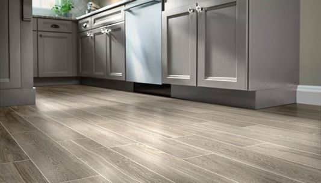

Floor

Santos floor services are your total solution for
installation and repair of most types of flooring, including
hardwood, laminate, vinyl, linoleum, ceramic tile and more.
All of our home improvement professionals are experienced and
insured. You can count on your local Mr. Handyman for a one-call,
worry-free solution to all your flooring projects
Santos handles everything from repairs to grout cleaning and
complete tear-outs. Whether you need help in your bathroom, kitchen,
ntryway, basement, laundry room or anywhere else, our home improvement
professionals will arrive at your home with all the tiling tools and
equipment they need to get the job done right.
Santos home improvement professionals all have an average of 10 years’
experience in the trades. Our laminate floor technicians are practiced
veterans when it comes to making vinyl flooring repairs and installing new
laminate floors. Contact your local Mr. Handyman for all of your flooring needs.